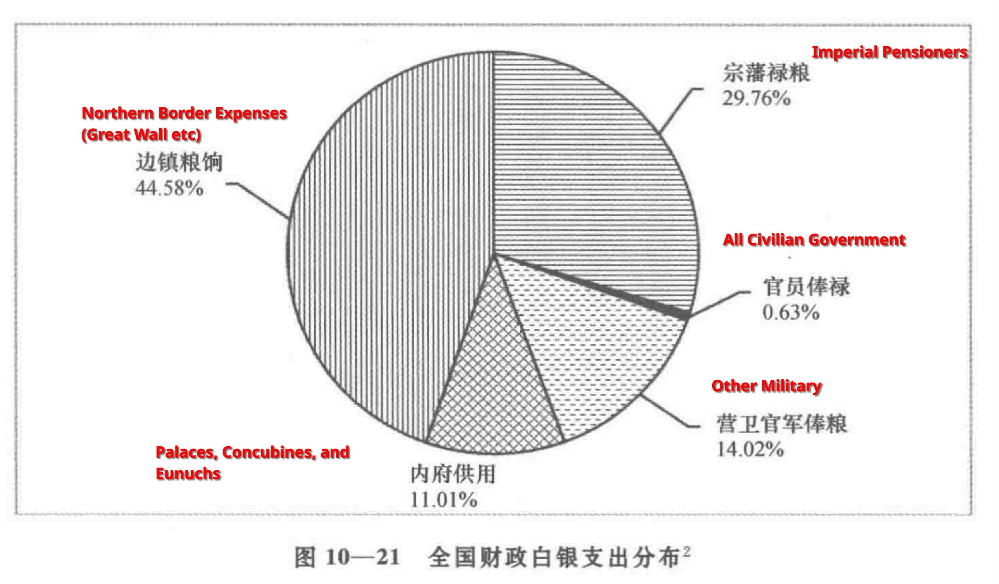

이건 명나라 만력제 시기 관청 재정 회계 자료인
만력회계록을 바탕으로 구성된 자료다.
1582년 당대 명나라의 재정 지출액은 은자로 1850만냥.
은자 가치는 1냥에 쌀 2섬 (190 킬로그램)을 구매 가능.
현대로 치면 대략 40만원에서 50만원 안밖.
만력회계록 기록에 따라 당시 명나라는 북방 이민족을 막기 위해
재정의 44.58%, 현대 환율로 대략 4조원 정도를 지출했다.
황실 종친들에게 주는 연금으로 29.76%, 2조 7천억원을 사용.
기타 지방의 군사 비용으로 14.02%, 1조 3천억원.
황궁 내부 살림을 위해 11,01%, 1조원.
일반 관료 녹봉으로 0.63%, 600억원을 지출했다.
말박이들이 가장 큰 문제인줄 알았더니
황실 종친 새끼들이 더 기생충이구나